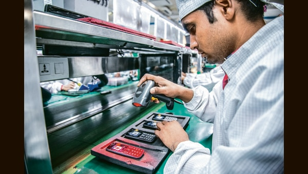

India's Potential Ascension in Global Value Chains

In the past decade, India has made significant progress in becoming a global manufacturing hub, particularly in the area of mobile phone exports. According to the India Cellular and Electronics Association, India exported about $3 billion worth of mobile phones in 2020, up from $1.6 billion in 2016. However, this success story needs to be viewed as just the first step in acquiring a deeper supply chain ecosystem, rather than mere assembly. India has the potential to slowly ascend global value chains, but it needs to address some key challenges first.
The Challenge of Densifying Supply Chains
The goal of densifying supply chains is to promote deeper integration between domestic and foreign firms, leading to increased specialization, innovation, and efficiency. However, achieving this goal is not easy, particularly for countries like India that have traditionally focused on low value-added activities such as assembly and basic manufacturing. To overcome this challenge, India needs to promote the following:
- Easing domestic constraints on manufacturing: India needs to address various domestic challenges, such as bureaucratic red tape, inadequate infrastructure, and environmental regulations, that hinder the growth of manufacturing activities. These constraints have led to high production costs and low productivity, making India less attractive to foreign investors. By addressing these challenges, India can create a more conducive environment for manufacturing and attract more foreign firms that can provide complementary capabilities and expertise.
- Promoting R&D and Innovation: Innovation is a key driver of value creation in global value chains. India needs to invest more in research and development (R&D) activities to promote innovation and enhance its technological capabilities. This can be achieved by providing tax incentives, funding R&D institutions, and supporting startups and small and medium-sized enterprises (SMEs) that focus on technology and innovation.
- Improving the Quality of Human Capital: Human capital is another critical factor in densifying supply chains. India needs to invest more in education and training programs that provide workers with the necessary skills and knowledge to operate and maintain the sophisticated machinery and equipment required for advanced manufacturing. This can be achieved by improving the quality of primary and secondary education, vocational training, and lifelong learning programs.
Case Studies of Successful Densification of Supply Chains
Several countries have successfully densified their supply chains by adopting the above-mentioned strategies. These countries include:
- South Korea: South Korea has been successful in upgrading its manufacturing sector from low-value-added activities such as shipbuilding and steel production to high-tech industries such as electronics and automobiles. The government adopted policies that encouraged R&D and innovation, provided tax incentives, and invested heavily in education and training programs. As a result, South Korea has become a major producer of advanced technologies such as semiconductors and high-definition displays.
- China: China has made significant progress in moving up the global value chain by attracting foreign investment, developing new industry clusters, and promoting advanced manufacturing capabilities. The government offered tax incentives, financial support, and infrastructure investments to foreign firms that set up operations in China. This led to the establishment of new industry clusters, such as the electronics cluster in the Pearl River Delta, which provided a critical mass of suppliers, customers, and infrastructure necessary for advanced manufacturing.
- Vietnam: Vietnam has emerged as a new manufacturing hub in Southeast Asia by attracting foreign firms that want to diversify their supply chains from China. The government introduced policies that encouraged foreign investment, provided tax incentives, and developed new industrial zones that provided basic infrastructure and services. Vietnam has also invested in education and training programs that enhance the quality of its human capital and support the development of advanced manufacturing capabilities.
Conclusion: India's Potential for Ascension in Global Value Chains
India has the potential to slowly ascend global value chains by densifying its supply chains through easing domestic constraints on manufacturing, promoting R&D and innovation, and improving the quality of human capital. While India has made significant progress in becoming a global manufacturing hub, particularly in the area of mobile phone exports, it needs to address some key challenges first. By investing in the right policies and strategies, India can attract more foreign firms and deepen its integration with the global economy, leading to increased specialization, innovation, and efficiency.
References:
https://www.livemint.com/news/india/india-s-mobile-phone-exports-to-cross-3-bn-target-this-year-11623880334782.html
https://www.india.com/business/india-becomes-global-hub-for-manufacturing-and-exporting-mobile-phones-details-inside-4557644/
https://www.mckinsey.com/business-functions/operations/our-insights/deepening-manufacturing-in-india?cid=other-eml-alt-mip-mck-oth-2006&hlkid=3e3b86da7eff4f34a8a0ff82d5d0cf32&hctky=3060577&hdpid=d7efc734-c9fa-4a06-a296-2cd905d75605
Hashtags:
#GlobalValueChains #SupplyChainEcosystem #IndianManufacturing #DensifyingSupplyChains #IndiasPotential #RnDAndInnovation #QualityOfHumanCapital
Category:
Business & Economy
Curated by Team Akash.Mittal.Blog
Curated by Team Akash.Mittal.Blog
Share on Twitter Share on LinkedIn